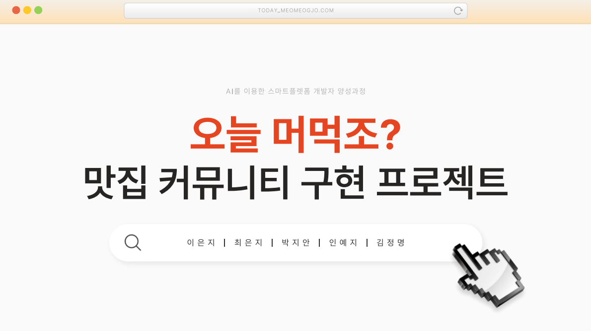
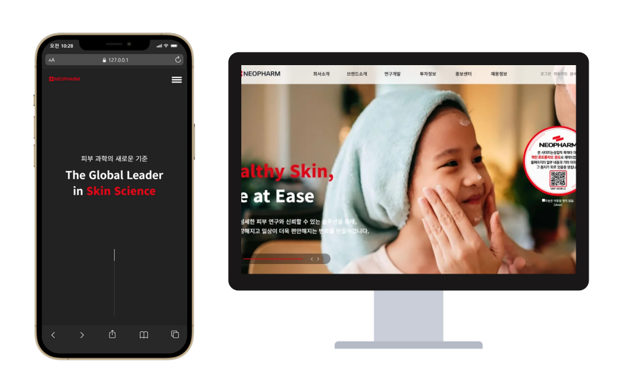
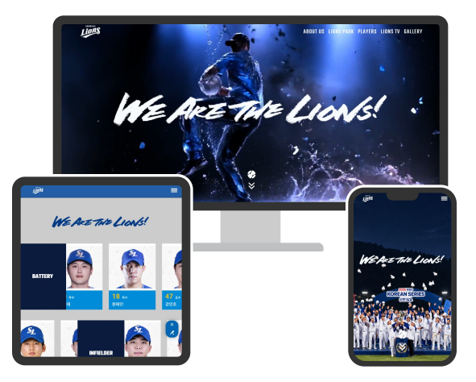

이력내용
프로필
접기학력사항
접기- 세종대학교
- 2019년 03월 ~ 2023년 08월 식품생명공학과 (복수전공: 경영학과) / 졸업 · 학점 3.89 / 4.5
경력사항
접기- ㈜퓨처비 · IT컨설팅팀 주임
- 2025년 09월 ~ 2026년 02월 공공데이터 개방 사업 기획 · 민간 활용 전략 수립
- 세종C&P - 영업부 사원
- 2024년 01월 ~ 2024년 06월 프로모션 운영
- 다이나핏
- 2023년 01월 ~ 2023년 12월 VMD 개선
- 파리바게트
- 2020년 02월 ~ 2023년 01월 고객응대, 매장정리, 재고관리, 음료 제조 등
교육사항
접기- [UI/UX 디자인 & 코딩]
- 2026년 07월 ~ 2026년 12월 그린컴퓨터아트학원 종로 / 수료
- [AI를 활용한 생성형 플랫폼 개발자 양성 과정]
- 2025년 02월 ~ 2025년 09월 MBC컴퓨터아카데미 천호 / 수료
포트폴리오
접기-

- 뭐먹조 · 맛집 커뮤니티 게시판 (5인 팀)
- github.com/INYEJI/binteori_spring JSP · Java · MyBatis 기반 맛집 리뷰 게시판에서 백엔드와 DB 연동을 맡아, 이미지 업로드와 CRUD · 조회수 · 페이징 · 검색 기능을 구현했습니다.
-

- AIPMS · AI 스마트 주차 시스템 (4인 팀)
- github.com/nrgh5657/aipms Spring Boot 기반 지능형 주차 관리 시스템에서 회원 · 인증을 맡아, 네이버 · 카카오 소셜 로그인과 BCrypt 비밀번호 암호화를 구현했습니다.
-

- 네오팜 기업형 웹사이트 리뉴얼
- yejix2n.mycafe24.com HTML 4.01 · 텍스트 이미지화 등 접근성 문제를 분석해, Figma 기획 · 디자인부터 시맨틱 HTML5 구현과 Cafe24 퍼블리싱까지 1인으로 진행한 기업형 웹사이트입니다. 서버리스 검색과 기업 전자공고 API 게시판을 구현했습니다.
-
- 네오팜 모바일 웹사이트 리뉴얼
- yejix2n.mycafe24.com/mobile 기업형 웹과 같은 정보 구조를 모바일 환경에 맞게 다시 설계한 모바일형 웹사이트입니다.
-

- 삼성 라이온즈 반응형 웹
- yejix2n.mycafe24.com/media PC · 태블릿 · 모바일에 최적화된 반응형 웹사이트입니다. Node.js 중간 서버로 실제 경기 결과를 연동하고, 조회 결과가 없을 때의 예외 화면까지 설계했습니다.
직무능력사항
접기- 서비스 기획
- 요구사항을 분석해 기능과 정보 구조(IA)를 정의하고, 스토리보드로 화면 흐름을 설계할 수 있습니다.
- Figma
- 와이어프레임부터 디자인 시안까지 직접 제작할 수 있고, AI 도구(Stitch · Claude)로 레이아웃을 탐색한 뒤 Figma에서 다듬습니다.
- HTML5 / CSS3
- 웹표준과 웹접근성을 준수한 시맨틱 마크업으로 구현하고, flex · grid와 미디어쿼리로 반응형 레이아웃을 만들 수 있습니다.
- JavaScript
- Swiper · AOS 등 라이브러리와 외부 API를 연동해 탭 메뉴, 팝업, 동적 데이터 출력 등 다양한 인터랙션을 구현할 수 있습니다.
- Java / Spring Boot
- Spring Security 기반 회원 · 인증(소셜 로그인, BCrypt 암호화)과 CRUD 기능을 구현할 수 있습니다.
- SQL / MyBatis
- MyBatis로 데이터베이스를 연동하고, 조회 · 페이징 · 검색 기능을 구현할 수 있습니다.
- Git / GitHub
- 원격 저장소 GitHub와 Confluence로 팀 협업과 문서화를 할 수 있습니다. github.com/INYEJI
- MS Office
- 업무를 위한 Word, Excel, PPT 활용이 가능합니다.
자격증
접기- 워드프로세서
- 2020년 03월
- 대한상공회의소
- 자동차운전면허 2종 보통
- 2020년 08월
- 충남지방경찰청
- 컴퓨터활용능력 2급
- 2021년 05월
- 대한상공회의소
- 위생사
- 2022년 11월
- 한국보건의료인국가시험원
- OPIc IM2 (영어)
- 2023년 06월
- ACTFL